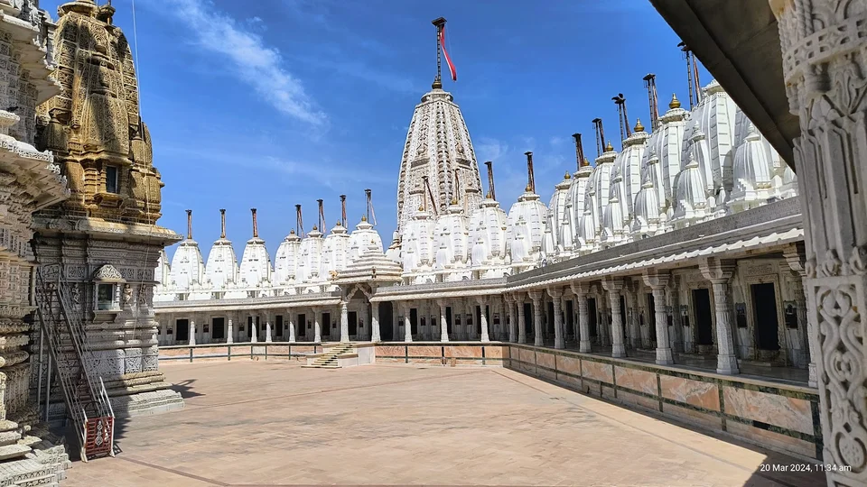
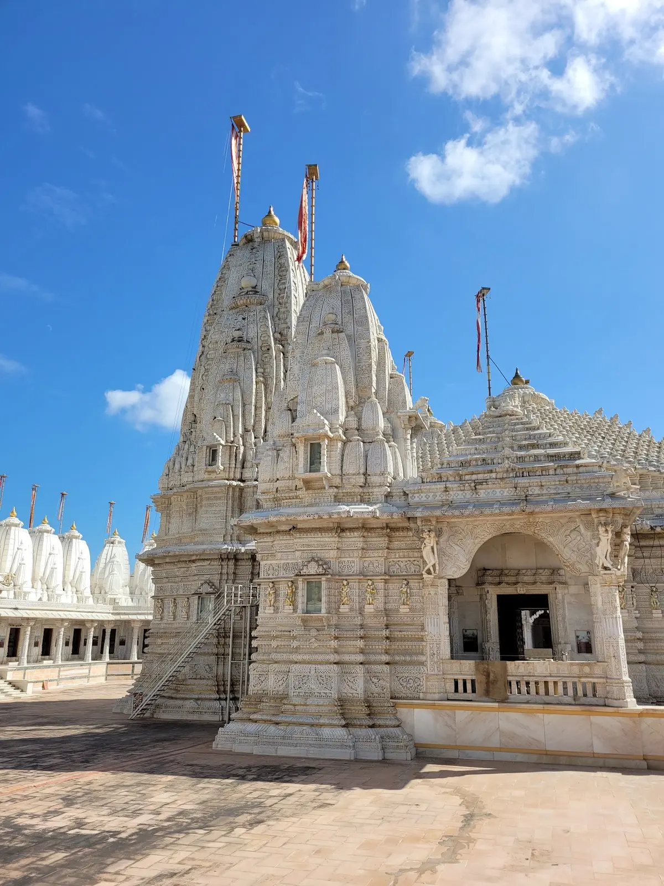
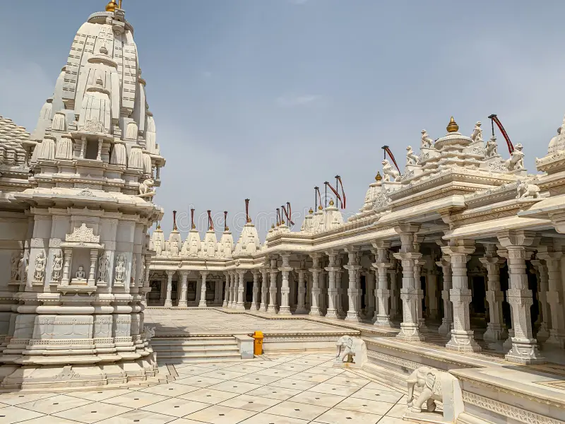

72 Jinalaya is an exquisite Jain temple complex located just 2 kilometers from Mandvi, renowned for its stunning architecture and intricate marble carvings. The name "72 Jinalaya" refers to the 72 small shrines (jinalayas) dedicated to various Jain Tirthankaras within the complex, each meticulously carved and individually significant. Built with pure white marble, the temple showcases the finest craftsmanship of Jain architectural traditions—featuring elaborate pillars, ornate domes, detailed lattice work (jali), and sculptures depicting Jain mythology and teachings. The main temple houses beautifully crafted idols of Tirthankaras adorned with precious ornaments during festivals. The peaceful atmosphere, combined with the visual splendor of marble architecture, makes this temple a spiritual haven for Jain devotees and an architectural wonder for art enthusiasts. The complex is impeccably maintained, with marble floors that shine like mirrors and gardens that provide quiet spaces for meditation. Visiting during early morning or evening allows you to experience the temple in soft natural light, when the marble seems to glow ethereally.
Who Should Visit
- Architecture Enthusiasts: Marvel at intricate Jain temple architecture, marble carvings, and traditional craftsmanship.
- Jain Devotees: A significant pilgrimage site for Jains visiting Kutch, perfect for prayers and spiritual reflection.
- Photographers: Capture stunning white marble structures, detailed carvings, and play of light through jali work.
- Art & Culture Lovers: Study Jain artistic traditions, symbolism, and the peaceful aesthetic of Jain architecture.
How to Reach
- From Mandvi (2km): Very close—just 5 minutes by auto-rickshaw (₹30-50) or taxi (₹100-150 return).
- Walking: Possible to walk in pleasant weather (20-25 minutes). Follow main road signs to the temple.
- From Bhuj: 60km total—visit as part of a day trip to Mandvi beach town.
- Best Timing: Visit early morning (6-9 AM) or late afternoon (4-6 PM) for peaceful atmosphere and better lighting.
Landmarks & Heritage
The defining monuments
Curated Local Advice
Dress Code
Modest clothing required. Remove shoes outside. Leather items (belts, bags) not allowed inside Jain temples.
Shopping & Bazaars
- Local markets available.
Local Eats
- Local food options available.
When to Visit
October to March (Winter): Best season. Pleasant weather (20-30°C) ideal for
leisurely temple visits and architectural appreciation.
Jain Festivals:
Visit during Mahavir Jayanti or Paryushan to witness special decorations, elaborate ceremonies, and
heightened spiritual atmosphere.
April to September: Summer is hot; visit
early morning. Monsoon brings greenery but possible rain—check weather before visiting.
Nearby Places to Visit
Suggested Itinerary
Location & Gallery


